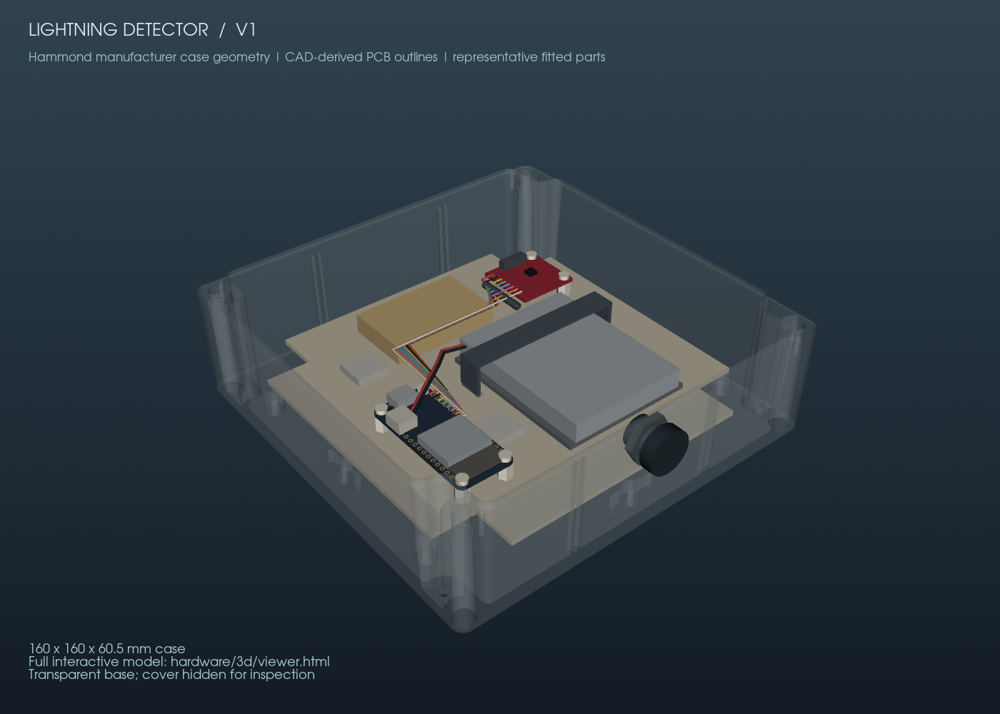

Lightning Detector
A battery-powered observation station, from sensor firmware to enclosure design and a private cloud dashboard.

View sourceBuild your ownExplore the hardware design
An Adafruit Feather ESP32 V2 sleeps while the AS3935 sensor listens. A sensor interrupt wakes the controller, which records the observation, sends an HMAC-signed HTTPS batch over Wi-Fi, and goes back to sleep. A flash queue preserves observations during network outages.
Hardware, firmware, and a dashboard
A Cloudflare Worker stores observations in D1. The private dashboard shows a 24-hour distance plot, searchable event history, battery voltage, and explicit station-health states. Each replica uses its own deployment and access tokens.
The public repository includes PlatformIO firmware, a parts list, wiring diagrams, carrier files, build instructions, and software checks. USB bench checks have verified sensor communication, calibration, interrupt wake, and heartbeat uploads; field performance and complete-device battery life still need measurement.
A single sensor estimates storm distance; it cannot determine bearing or exact strike locations. This hobby instrument is not a certified lightning warning system.